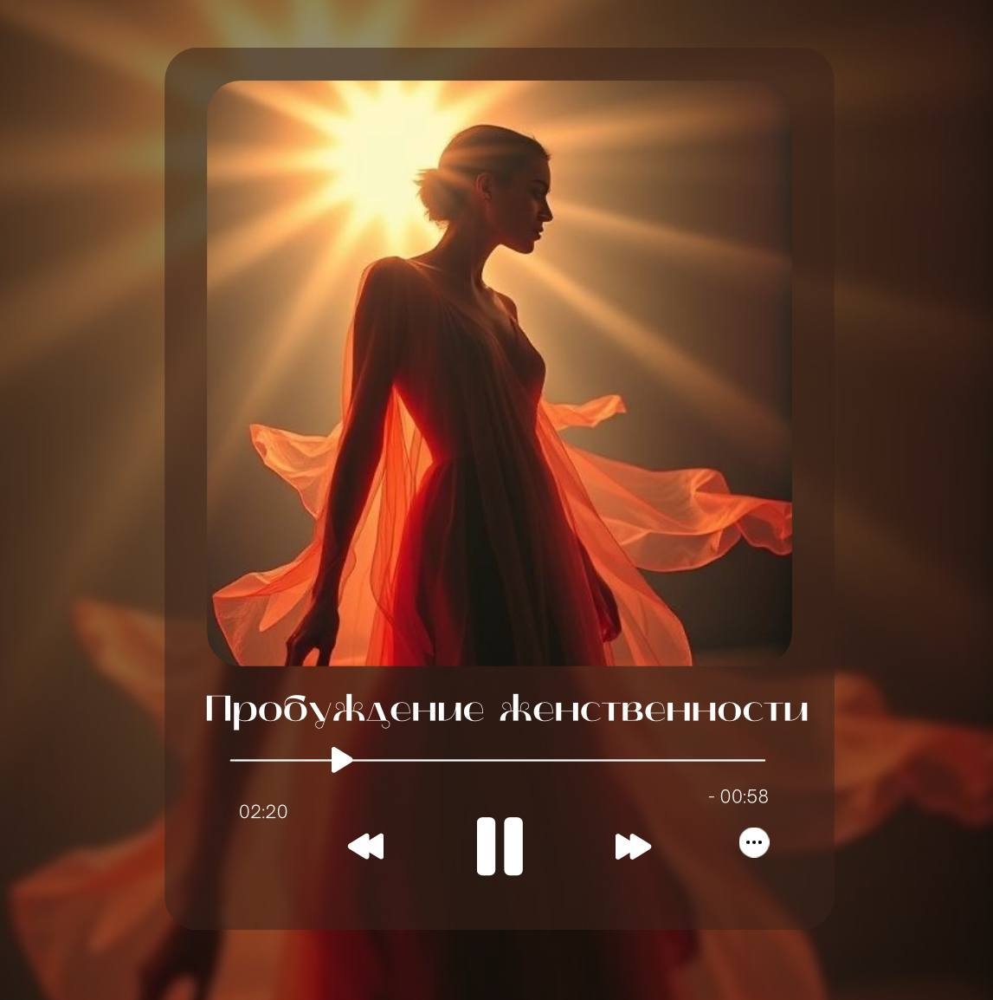
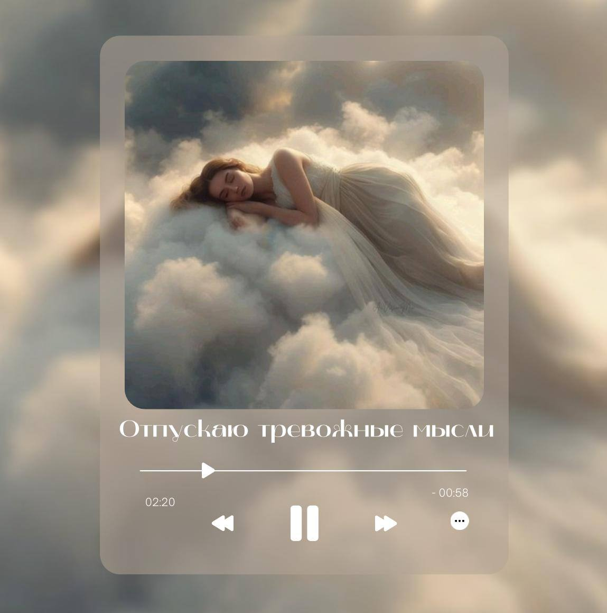

Милые, эта медитация — мягкое приглашение вспомнить о себе, своей нежности и природе
женственности.
Наденьте наушники, закройте глаза и позвольте себе просто быть.
Где-то глубоко внутри уже живёт источник вашей любви к себе. В этой практике вы мягко
прикасаетесь к нему, наполняетесь гармонией и позволяете своей женственности сиять —
без ожиданий и требований, только с принятием и теплом.
Подарок от Сурии

«Позволь себе быть мягкой, не теряя силы. Женственность — это не слабость, а глубокое доверие
жизни.»
Наборы медитаций
Готовые комплекты практик под ключевые запросы: опора, защита и исцеление сердца.
Набор медитаций
Опора внутри меня
Когда кажется, что всё рушится и держаться не за что. Набор помогает собрать себя
изнутри,
вернуть спокойствие,
уверенность и ощущение внутреннего стержня. После практик пропадает растерянность и
приходит
чувство, что вы
снова твёрдо стоите на ногах.
Комплект для тех, кто много сталкивается с чужими эмоциями и нагрузкой. Включает
медитации
«Защита рода»,
«Освободи голову и тело» и «Баланс энергии». Помогает не втягиваться в чужие состояния,
очищаться от налипшего
негатива и мягко восстанавливать силы после тяжёлых периодов.
Набор для тех, кто проживает тяжёлые отношения или развод. Включает «Отпустить боль
прошлого»,
«Разрыв кармической связи» и «Призыв новой любви». Помогает отпустить старую боль,
освободиться от
болезненной привязки и открыть сердце для отношений в резонансе с вами.
Выберите одну медитацию под текущее состояние — тревожность, контроль, усталость, боль прошлого или
запрос на любовь.

Отпустить тревожность и навязчивые мысли
Когда поток мыслей не останавливается, в голове одно и то же, страхи о будущем и «а вдруг
всё пойдёт не так».
Медитация помогает успокоить ум и тело, перестать крутить ситуации и наконец выдохнуть.
После прослушивания
внутри становится тише, отпускает напряжение, и вы перестаёте мучить себя бесконечными
мыслями.
Когда ум бесконечно анализирует: почему он не позвонил, что имел в виду, что будет дальше.
Медитация помогает
отпустить это состояние, перестать цепляться за то, что вы не можете изменить, и позволить
жизни течь.
После прослушивания мысли стихает, приходит спокойствие и ощущение присутствия «здесь и
сейчас».
Когда кажется, что больше не на что опереться и все опоры снаружи ломаются. Практика
возвращает контакт
с собой, ощущение уверенности и внутреннего стержня. После прослушивания уходит ощущение
пустоты, появляется
спокойствие и чувство, что вы можете положиться на себя.
Родовая защита — самая естественная защита человека. Без ритуалов и сложных обрядов: просто
слушайте
программу, и с каждым разом ваша защита становится сильнее. Медитация помогает не
втягиваться в чужие эмоции,
не забирать на себя негатив и чувствовать за спиной силу рода.
Гармонизация своей энергии
Когда убрали чужое нужно вернуть своё. Чтобы не ходить, как пустая оболочка. Чтобы не трясло
от любого замечания. Чтобы вернулась к себе в свою энергию в свою опору.
Сброс перегруза: освободи голову и тело
Представь: вечер, ты наконец дома. Снимаешь обувь, падаешь на диван и вдруг понимаешь, что
внутри всё ещё напряжено. Плечи как деревянные, в голове крутится весь день, а в груди
тяжёлый комок. Знакомо до боли, правда? Приходишь вечером домой и внутри всё кипит или,
наоборот, как будто батарейка на нуле.
Для освобождения от болезненной привязки к человеку, с которым отношения уже не приносят
радости,
но всё ещё тянут энергию. После прослушивания снижается эмоциональная зависимость, уходит
навязчивая тяга
и появляется ощущение внутренней свободы и лёгкости.
Эта медитация направлена на работу с конкретным желанием.
Ты выбираешь чёткий запрос, в любой сфере жизни, и через медитативное состояние выстраиваешь
с ним внутренний контакт.
Для восстановления внутреннего равновесия, когда всё разъезжается и нет сил держать фокус.
После
прослушивания вы становитесь собранной, спокойной и притягательной — именно в таком
состоянии часто
возвращаются бывшие, потому что ваша энергия снова звучит уверенно и ярко.
Для тех, кто застрял в обидах, разочарованиях и старых историях. Медитация помогает мягко
отпустить
прошлые переживания, перестать возвращаться к ним мыслями. После прослушивания приходит
ощущение
внутреннего спокойствия и возможности двигаться дальше.